Week 1: Elegance, Efficiency, and the Art of Problem Solving
Welcome to the first week of CPSC 203! This week is all about developing a new way of thinking—one that will serve you well throughout your journey in computer science and beyond. We’re going to explore what it means to think algorithmically, what makes a solution elegant, and why efficiency matters when solving problems with code.
What is Algorithmic Thinking?
Before we write a single line of code, let’s talk about what it means to think like a computer scientist. At its core, algorithmic thinking is about breaking problems down into clear, repeatable steps that can be followed to reach a solution. It’s a way of approaching problems that combines creativity with precision.
Think about following a recipe. A good recipe doesn’t just say “make cookies”—it tells you exactly what ingredients you need, in what order to combine them, at what temperature to bake them, and for how long. That’s algorithmic thinking: taking a complex goal (delicious cookies) and breaking it down into manageable, executable steps.
If you’ve taken an introductory programming course, you might have learned systematic design processes—recipes for turning problem statements into working code. That’s algorithmic thinking in action! This term, we’re going to build on that foundation by asking new questions: not just does my code work? but how well does it work? and how elegant is my solution?
But here’s where it gets interesting: there are often many different recipes for chocolate chip cookies. Some are faster, some use fewer dishes, some produce chewier cookies, and some produce crispier ones. Similarly, for most computational problems, there are multiple valid solutions—and part of becoming a skilled programmer is learning to evaluate which solution is best for your particular situation.
The Flashlight Game: A Case Study in Efficiency
Let’s make this concrete with an example. Imagine we’re in a lecture hall with 150 students, and we want to narrow the group down to just 10 people using yes/no questions. Each question works like this:
- A student poses a binary (yes/no) question
- Everyone who answers “yes” turns on their phone’s flashlight
- Those people are now “on vacation”—they’re done and can relax
- The remaining people (who said “no”) continue playing
There’s a catch though: each question must eliminate at least 5 people but no more than half of the remaining group. These constraints force us to be strategic.
Analyzing the Best and Worst Cases
Let’s think about this mathematically. We start with 150 people and want to get down to 10.
Best case scenario: What if we’re really clever and each question eliminates exactly half the group?
- Start: 150 people
- After question 1: 75 people (eliminated 75)
- After question 2: 37-38 people (eliminated ~37)
- After question 3: 18-19 people (eliminated ~19)
- After question 4: 9-10 people (eliminated ~9)
We’re done in about 4 questions! Notice that we’re repeatedly dividing by 2, which is why we can express this mathematically as \(\log_2(150/10) \approx 4\) questions.
Worst case scenario: What if we’re unlucky and can only eliminate the minimum (5 people) each round?
- We need to eliminate 140 people total (150 - 10 = 140)
- Eliminating 5 per round: 140 ÷ 5 = 28 rounds
That’s quite a difference! Same problem, same rules, but vastly different efficiency depending on our strategy.
Why Stop at 10?
You might wonder: why stop at 10 people instead of continuing until just one person remains? This reveals an important principle in algorithm design: once a problem becomes small enough, we can solve it by brute force.
With 10 people remaining, we could easily just go around the room and ask each person directly. The overhead of crafting clever binary questions isn’t worth it anymore. This principle—divide a large problem efficiently, then handle the small pieces directly—appears throughout computer science.
Tangrams: The Power of Fundamental Building Blocks


Tangrams are an ancient Chinese puzzle consisting of seven geometric pieces: five triangles (two large, one medium, two small), one square, and one parallelogram. These seven pieces can be rearranged to form an astonishing variety of shapes—animals, people, objects, abstract designs.
The beauty of tangrams is that the pieces never change. You’re not getting new pieces for each puzzle. Instead, you’re learning to see how the same fundamental components can be combined in different ways to solve different problems.
This is exactly how programming works.
When you write Python code, you’re working with a relatively small set of fundamental building blocks:
- Variables to store information
- Conditionals (
if/else) to make decisions - Loops (
for/while) to repeat actions - Functions to organize and reuse code
- Data structures (lists, dictionaries, sets) to organize information
Just like tangram pieces, these building blocks don’t change. What changes is how you arrange them. A loop inside a conditional gives you different behavior than a conditional inside a loop. A function that calls another function creates different possibilities than two independent functions.
The journey of learning to program is partly about mastering these individual pieces, but more importantly, it’s about developing the intuition for how to combine them effectively. The more comfortable you become with the fundamental building blocks, the more sophisticated the problems you can solve. But what separates a working solution from a beautiful solution? Let’s explore that next.
Elegance in Design and Code
We’ve talked about combining fundamental building blocks to solve problems. Now let’s pause and consider a seemingly philosophical question: What makes something elegant?
This isn’t an idle question. In your previous coursework, you learned systematic approaches to design—how to reliably go from problem to solution. Now we’re adding another dimension: elegance—a quality we should actively pursue in our code, our algorithms, and our problem-solving approaches. You might not fully recognize it yet (that intuition develops with practice), but you can start to see what it looks like. So what does it mean?
The Scissors Test
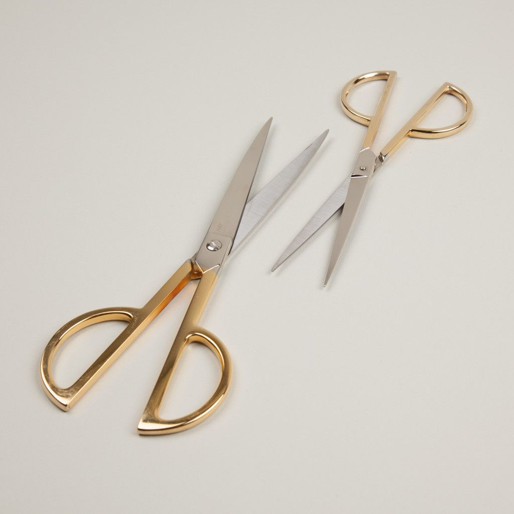
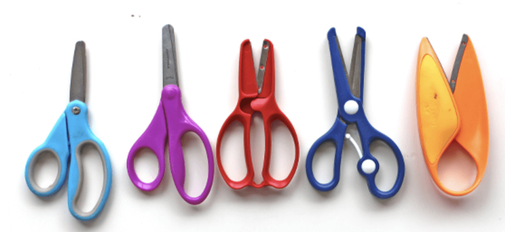
Look at these three examples of scissors:
Classic scissors (left): Two handles, two blades, a simple pivot point. This design has remained virtually unchanged for thousands of years. Why? Because it perfectly embodies its function. Every element serves a purpose, and no element is wasted.
Merged-handle scissors (center): Visually interesting, perhaps artistic, but completely non-functional. The handles are merged into one piece, making it impossible to open and close the blades. It fails the fundamental test of scissors: it cannot cut.
Colorful scissors (right): These add variety and personality through color, but notice that the underlying elegant design remains intact. The essential mechanism—the part that makes scissors work—is preserved.
From these examples, we can extract what elegance means: form perfectly matched to function, with no unnecessary complexity.
Elegance in Computing
In the context of software development, elegance emerges from the intersection of two qualities:
Ingenuity — The problems we encounter are rarely solved by simply copying solutions we’ve seen before. We need creativity to adapt our tools to new challenges, to see unexpected connections, and to find novel approaches.
Simplicity — Code is fundamentally a form of communication with other humans (your future self included!). If your solution is so complex that others cannot understand it, they will rewrite it rather than maintain it. Complexity creates friction; simplicity invites collaboration.
Steve Jobs captured this beautifully:
“Simplicity is the ultimate sophistication. It takes a lot of hard work to make something simple, to truly understand the underlying challenges and come up with elegant solutions. It’s not just minimalism or the absence of clutter. It involves digging through the depth of complexity. To be truly simple, you have to go really deep. You have to understand the essence of a product in order to be able to get rid of the parts that are not essential.”
Notice that he says it takes “a lot of hard work” to make something simple. Simplicity isn’t about taking shortcuts or doing less thinking—it’s about thinking so clearly that you can strip away everything non-essential.
When you write code, ask yourself:
- Does each part serve a clear purpose? Like the pivot in scissors, every line of code should contribute to the solution.
- Can someone else understand what I’m doing? If not, can you simplify or add clarifying comments?
- Am I solving the problem, or am I showing off? Clever code is not always good code.
Handcraft: A Bridge Between Art and Algorithm
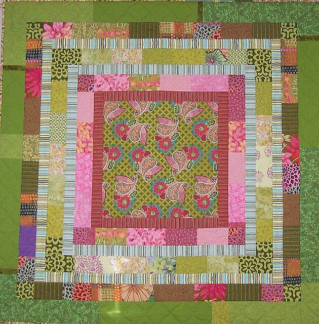
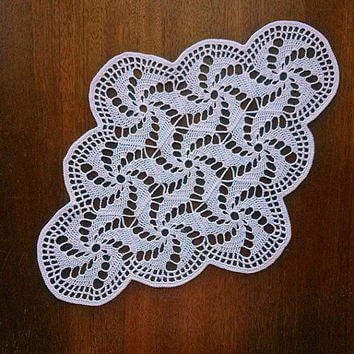
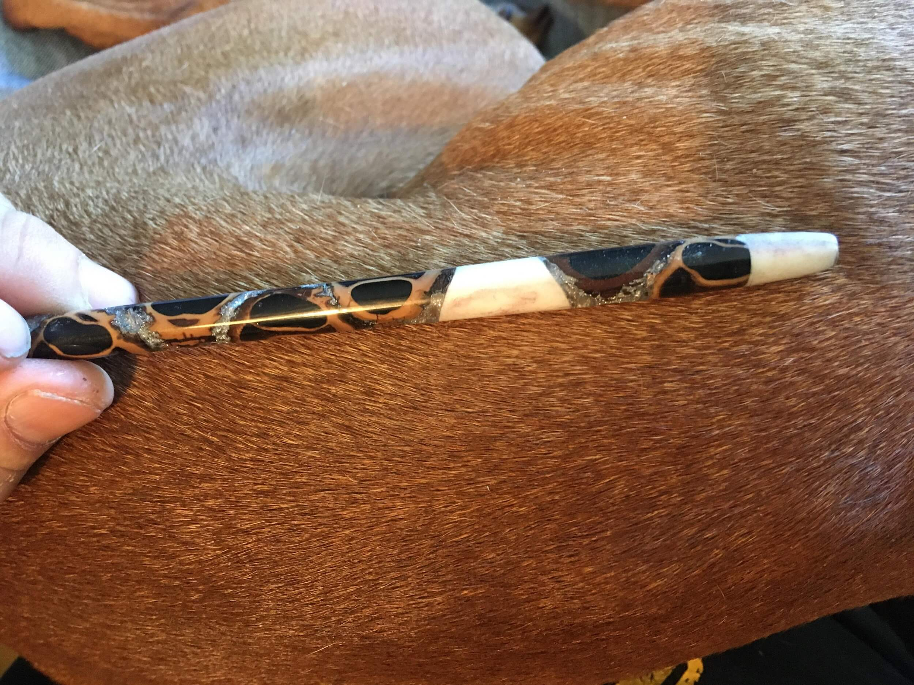
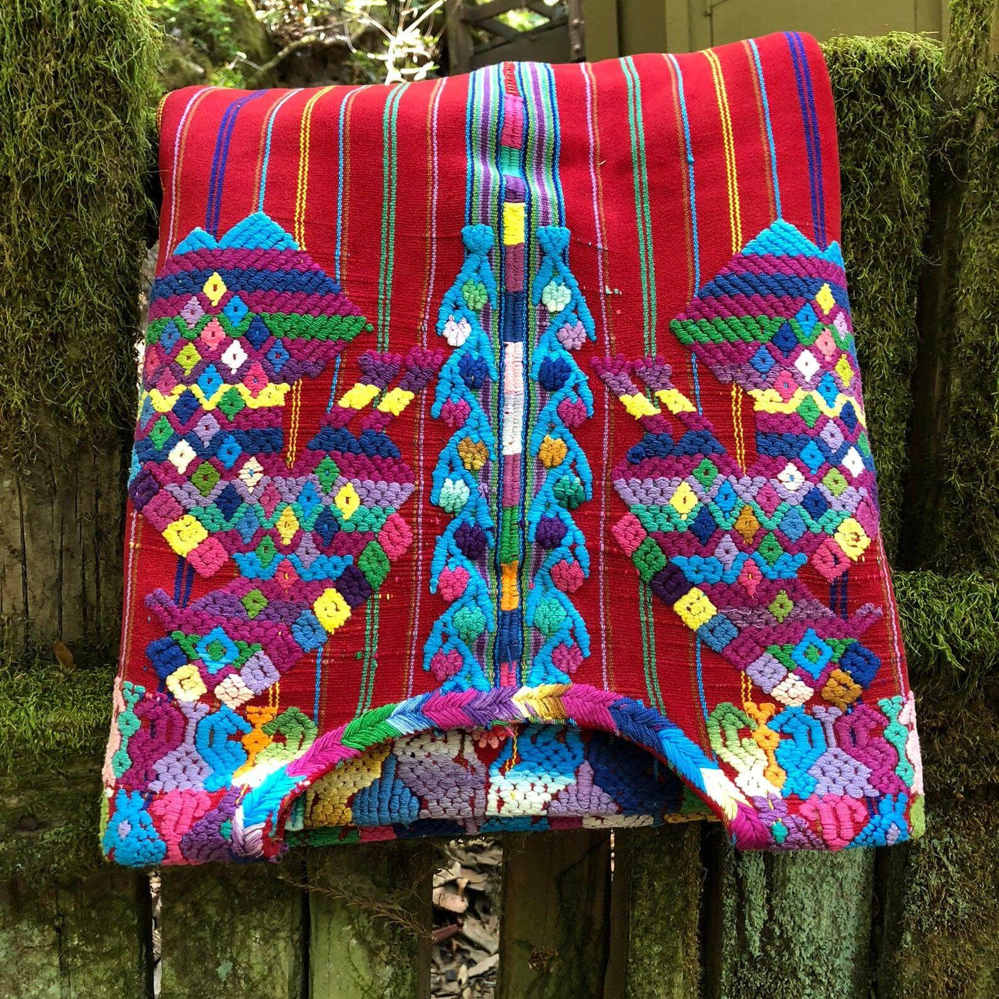
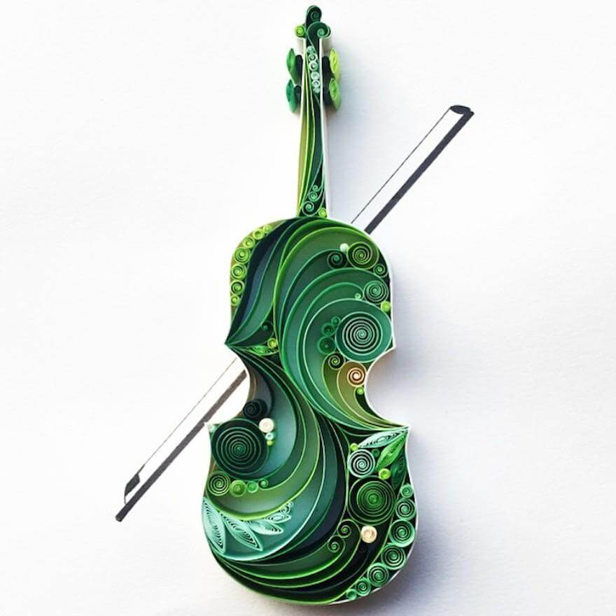
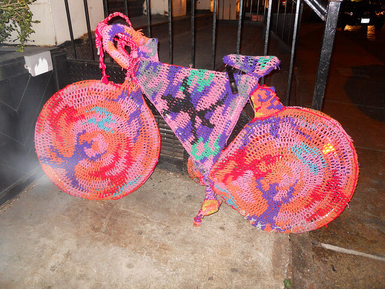
Traditional handcrafts—quilting, knitting, crochet, weaving, paper art—might seem far removed from computer science, but they share deep structural similarities with programming. If you learned design processes in your intro course, think of handcraft as another lens on the same ideas: turning systematic instructions into creative artifacts. Understanding these connections can help us think more clearly about what we do when we write code.
Consider what these crafts involve:
- Patterns: A quilt block is a pattern that repeats. A knitting stitch is a pattern that repeats. In programming, we call this iteration and loops.
- Ingenuity: Working within constraints (limited yarn colors, fixed paper size) requires creativity. Same with programming.
- Resource management: You have finite yarn, limited time. In computing, we have finite memory, limited processing power.
- Instructions: A knitting pattern is a sequence of instructions that, if followed precisely, produces a specific result. Sound familiar?
Knitting Patterns as Algorithms
Let’s look at an actual knitting pattern and see just how similar it is to code:
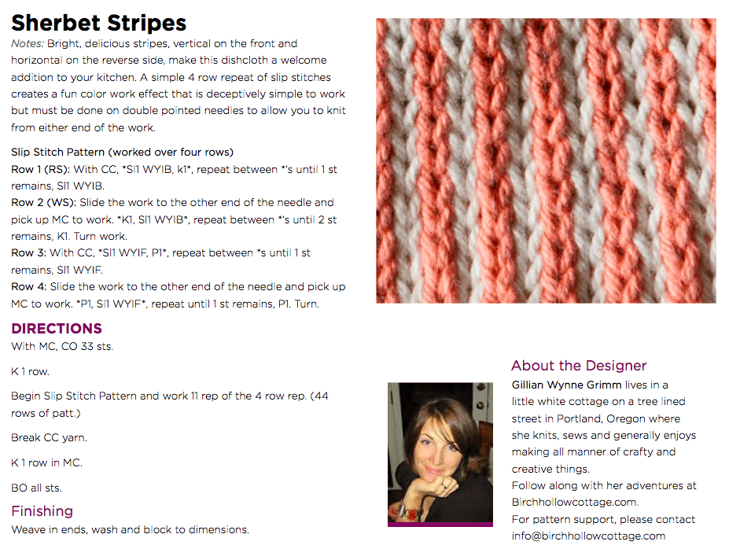
Here’s a typical instruction: “Cast on 4 stitches. Row 1: Knit across. Row 2: Knit 1, yarn over, knit to end. Repeat Row 2 until you have 40 stitches.”
Let’s translate this into programming concepts:
# Cast on 4 stitches
stitches = 4
# Row 1: Knit across
knit_row()
# Repeat Row 2 until you have 40 stitches
while stitches < 40:
knit(1)
yarn_over()
knit_to_end()
stitches += 1This isn’t just a superficial similarity—the structure of thought is identical. We have:
- Initialization: Setting up the initial state (casting on)
- Sequence: Steps that happen in order
- Iteration: Repeating actions (the loop)
- Conditions: Knowing when to stop
The language of craft instructions and the language of programming are both trying to achieve the same thing: precise, unambiguous communication of a process.
Quantifying Work: Understanding Growth
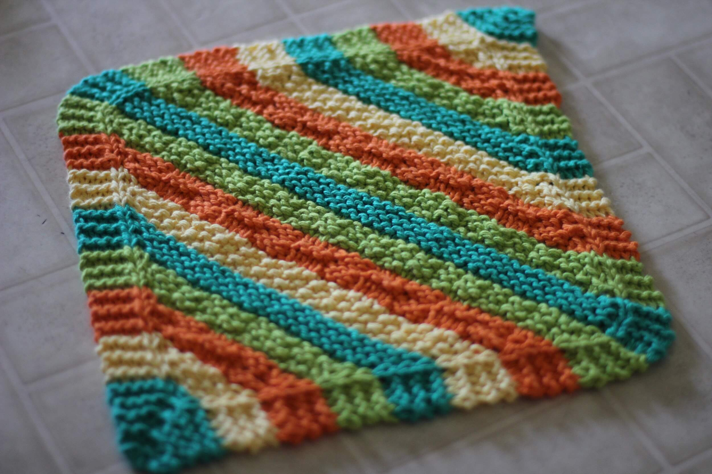
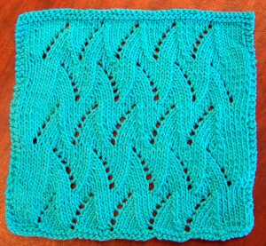
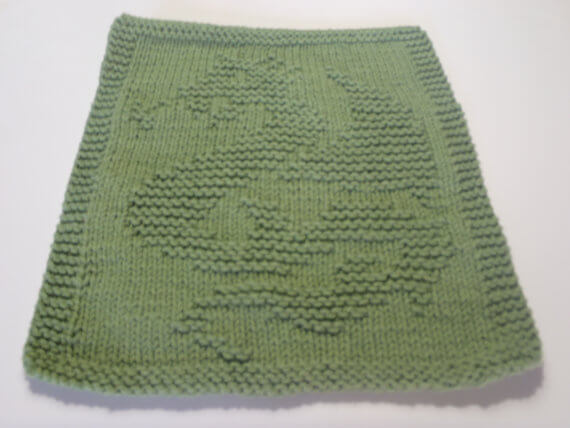
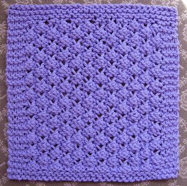
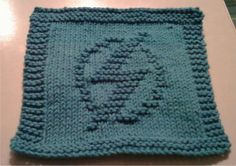
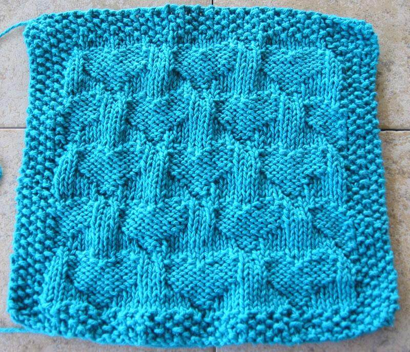
Now we come to one of the most important concepts in computer science: understanding how the amount of work grows as the problem size increases.
Let’s stick with our knitting metaphor. Suppose you’re knitting a square dishcloth where each side has \(n\) stitches. How much total work (total stitches) do you need to do?
A Simple Example
Let’s try some concrete numbers:
- A \(10 \times 10\) cloth has 10 rows, each with 10 stitches = \(10 \times 10 = 100\) total stitches
- A \(20 \times 20\) cloth has 20 rows, each with 20 stitches = \(20 \times 20 = 400\) total stitches
- A \(40 \times 40\) cloth has 40 rows, each with 40 stitches = \(40 \times 40 = 1,600\) total stitches
- An \(80 \times 80\) cloth has 80 rows, each with 80 stitches = \(80 \times 80 = 6,400\) total stitches
Notice the pattern:
- When we doubled the size from 10 to 20, the work quadrupled (100 → 400)
- When we doubled again from 20 to 40, the work quadrupled again (400 → 1,600)
- When we doubled once more from 40 to 80, the work quadrupled once more (1,600 → 6,400)
This is what we mean when we say the work grows as \(n^2\) (pronounced “n squared”). The relationship between the size and the work isn’t linear—it’s quadratic.
From Stitches to Code
Here’s how we’d express this same idea in Python:
def knit_square_count(n):
stitches = 0
for row in range(n): # n rows
for col in range(n): # n stitches per row
stitches += 1 # one unit of work
return stitches # total = n × n = n²Let’s break down why this is \(n^2\):
- The outer loop runs \(n\) times (once for each row)
- For each iteration of the outer loop, the inner loop runs \(n\) times (once for each stitch in that row)
- The line
stitches += 1executes \(n \times n = n^2\) times total
The nested loop structure directly corresponds to the mathematical relationship. One loop gives you linear growth (\(n\)), two nested loops give you quadratic growth (\(n^2\)), three nested loops would give you cubic growth (\(n^3\)), and so on.
Why This Matters: Making it Visual
We could also write this function to actually show the square being built:
def knit_square_print(n):
for row in range(n):
current_row = ""
for col in range(n):
current_row += "X"
print(current_row)If you call knit_square_print(5), you’ll see:
XXXXX
XXXXX
XXXXX
XXXXX
XXXXXEach X represents one “unit of work.” Counting the X’s gives you the total work: \(5^2 = 25\) operations.
The Mathematics of Efficiency
Now let’s connect this to computer science more broadly. When we analyze algorithms, we ask: “As the input size grows, how does the running time grow?”
This question leads us to mathematical functions that describe growth rates. The most common ones you’ll encounter are:
- \(n\) (linear): Work grows directly with input size
- Example: Reading through a list once
- \(n \log n\) (log-linear): Slightly more than linear
- Example: Efficient sorting algorithms like mergesort
- \(n^2\) (quadratic): Work grows with the square of input size
- Example: Comparing every pair of items in a list
- \(n^3\) (cubic): Work grows with the cube of input size
- Example: Comparing every triple of items
- \(2^n\) (exponential): Work doubles with each additional input
- Example: Trying every possible subset of items
A Dramatic Illustration
Let’s imagine we have a computer that can perform \(10^{12}\) (one trillion) operations per second. This is roughly comparable to modern high-performance hardware. How long would different algorithms take?
| n = 10 | n = 100 | n = 1,000 | n = 10,000 | n = 1012 | |
|---|---|---|---|---|---|
| \(n\) | 10-11 s | 10-10 s | 10-9 s | 10-8 s | 1 s |
| \(n \log n\) | 10-11 s | 10-9 s | 10-8 s | 10-7 s | 40 s |
| \(n^2\) | 10-10 s | 10-8 s | 10-6 s | 10-4 s | 1012 s |
| \(n^3\) | 10-9 s | 10-6 s | 10-3 s | 1 s | 1024 s |
| \(2^n\) | 10-9 s | 1018 s | 10289 s | — | — |
Let’s put those big numbers in perspective:
- \(n^2\) with a trillion items: \(10^{12}\) seconds ≈ 32,000 years. Civilization as we know it hasn’t existed that long.
- \(n^3\) with a trillion items: \(10^{24}\) seconds ≈ longer than the universe has existed. This is meaningless to wait for.
- \(2^n\) with just 100 items: \(10^{18}\) seconds ≈ a billion years. Our sun will have died long before this completes.
For small inputs (like \(n = 10\)), everything is so fast that efficiency doesn’t matter. But as problems scale—and modern problems do scale to billions or trillions of items—the growth rate becomes absolutely critical.
This is why we care so much about algorithmic efficiency. An elegant, efficient algorithm isn’t just intellectually satisfying—it can mean the difference between a problem that completes in seconds versus one that would outlive civilizations.
Don’t worry if this feels like a lot to absorb at once—these ideas will recur throughout the term. Every time we analyze an algorithm, we’ll ask: what’s the growth rate? By the end of the course, this kind of analysis will feel second nature. For now, the key takeaway is simple: the structure of our loops and the growth rate of our algorithms have real, dramatic consequences.
Understanding What \(n\) Represents
It’s important to note that “\(n\)” is a variable that represents the “size” of your input, but what that means depends on the problem:
- For searching through a list, \(n\) might be the number of items in the list
- For our knitting example, \(n\) represents the side length of the square
- For processing an image, \(n\) might be the number of pixels
- For analyzing social networks, \(n\) might be the number of people
The key insight is always the same: how does the work scale as this size parameter increases?
Putting It All Together
This week, we’ve covered a lot of ground. Let’s recap the key ideas:
Algorithmic thinking is about breaking problems into clear, repeatable steps. The Flashlight Game showed us that different strategies (halving vs. eliminating 5 at a time) lead to vastly different efficiency.
Fundamental building blocks (like tangram pieces or programming constructs) can be combined in countless ways. Mastery comes from understanding how to arrange them effectively.
Elegance emerges from the intersection of ingenuity and simplicity. Like well-designed scissors, elegant code has every element serving a clear purpose with no unnecessary complexity.
Handcraft provides a powerful metaphor for understanding programming. Knitting patterns are algorithms, stitches are operations, and the structure of craft instructions mirrors the structure of code.
Growth rates matter profoundly. Understanding whether your solution is \(n\), \(n^2\), or \(2^n\) determines whether it will finish in seconds or outlive the sun.
Looking Ahead
These concepts form the foundation for everything we’ll do this term. Next week, we’ll put theory into practice. We’ll start applying these ideas in Python as we begin our first exploration. You’ll write actual code, work with real problems, and see how these abstract principles—efficiency, elegance, algorithmic thinking—manifest in concrete programs. The real fun begins when we start building things.
As you move forward, keep coming back to these questions:
- Am I thinking algorithmically? Can I break this problem into clear steps?
- Is my solution elegant? Does it balance ingenuity with simplicity?
- How will this scale? If my input grows 10x or 100x, what happens to my running time?
You already know how to design programs. This term, you’ll learn how to design them well. Welcome to the journey of learning to think like a computer scientist. The view from here is remarkable.